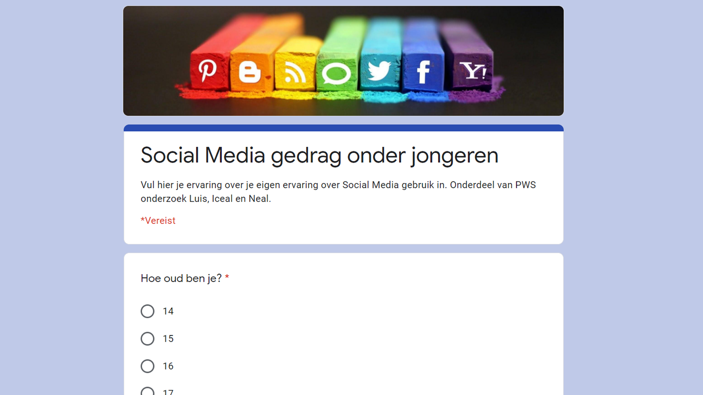
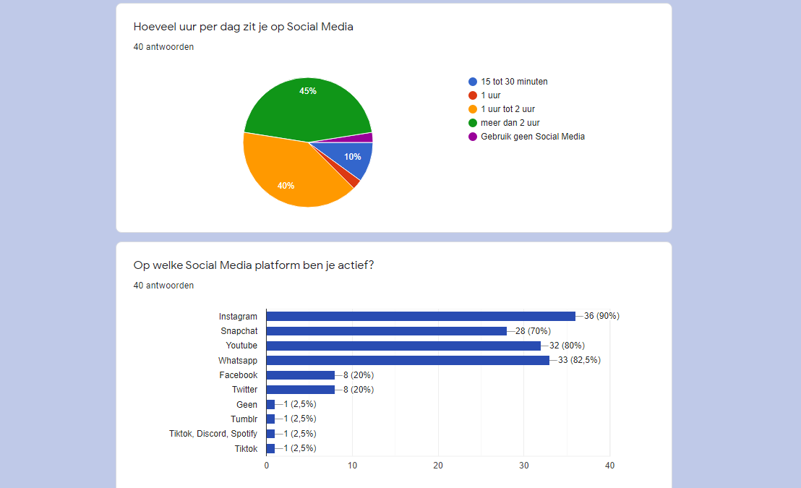
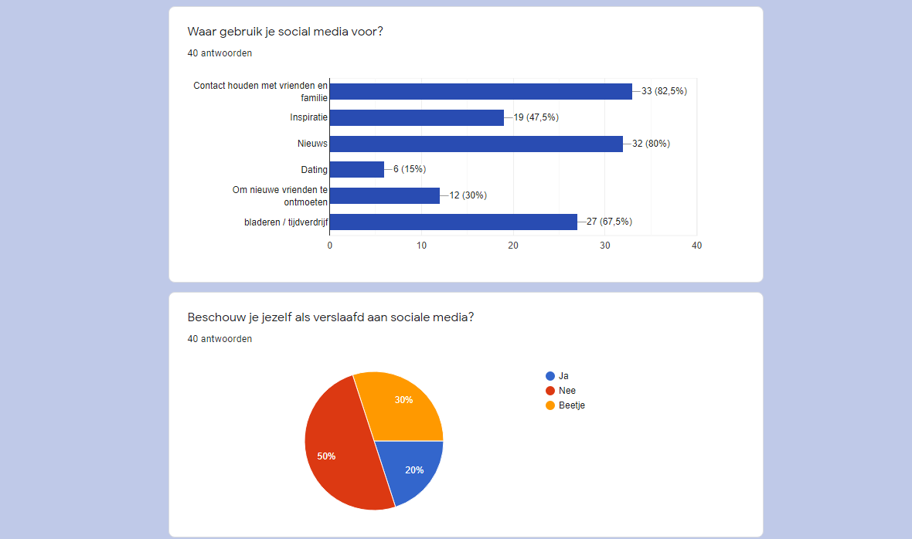
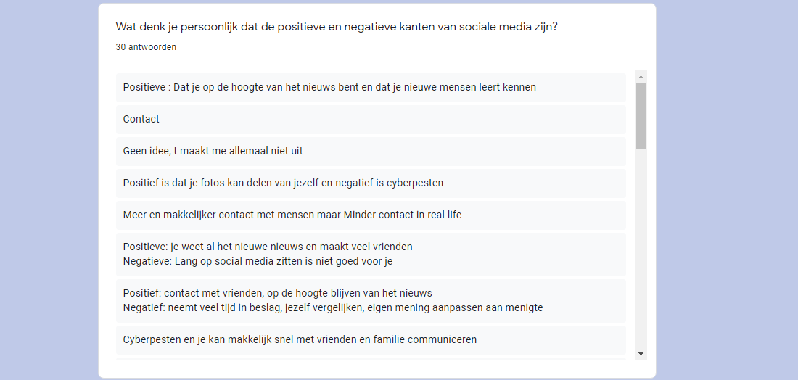

Wij hebben als hoofdvraag opgesteld:
H1. Wat is de invloed van Social Media op het leven van jongeren?
Daarbij hebben we als deelvragen:
D1. In hoeverre creëert social media een ideaalbeeld voor jongeren?,
D2. In hoeverre belemmert social media het dagelijks leven van jongeren?,
D3. Op welke manier beïnvloedt social media het wereldbeeld van jongeren?,
D4. In welke mate verrijkt social media het sociale leven van jongeren?,
D5. Hoe werkt de techniek achter Social Media?,
D6. Wat is het belang van Social Media bedrijven?
Onze hypothese voor de uitkomst van de onderzoek is dat social media ons maatschappelijk gezien enorm heeft veranderd. Op sociaal gebied zijn we ons in de echte wereld anders gaan gedragen. Veel zaken zijn van offline naar online verplaatst met enorme gevolgen. De invloed van social media op jongeren is dan ook enorm. Uit onderzoek van de UvA blijkt namelijk dat jongeren op social media veel dingen doen die ze eigenlijk ook makkelijk in real-life zouden kunnen doen. Met Whatsapp zou je bijvoorbeeld in real-life gewoon iemand kunnen spreken. Je foto zou je ook fysiek kunnen laten zien. Social Media heeft deze dingen zoveel makkelijker gemaakt. Dat lijkt volgens ons van te voren na kort onderzoek de leidraad van de veranderingen van Social Media op het sociale leven van jongeren. En op welke manier ze dingen kunnen overbrengen op andere.
Dit alles willen we gaan onderzoeken door middel van online internetbronnen, een enquête van 15 vragen om een bevestigend beeld te krijgen van onze eigen ervaringen. Daarnaast hebben we een interview afgelegd van 8 open vragen om ons onderwerp ook vanuit deskundig oogpunt te laten belichten.
Bureau Jeugd & Media is instelling die met en deskundigen werk leveren op het gebied van mediaopvoeding, mediawijsheid en digitale geletterdheid. Bureau jeugd & media is vooral voor het informeren, inspireren of activeren. Zij gebruiken kennis op wetenschappelijk gebied om te informeren over bijvoorbeeld cyberpesten, sexting, de invloed van smartphones op het leven van tieners, tablets in het gezin, privacy, gamen, of het integreren van mediawijsheid op school in de samenleving. Wij hebben hierbij een telefonisch interview gehouden.
~ Logo instelling Bureau Jeugd & Media ~
1. Hoe ziet U dat verandering van het social media het gedrag van jongeren veranderd heeft?
‘’We zien dat we steeds meer aanmeldingen krijgen voor ouder & kind avonden voor jongeren, dit om hen op de hoogte te stellen van dat social media in vooral de groep jongeren erg hun leven kan veranderen.”
2. Hoe bieden jullie hulp aan mensen die zich negatief beïnvloed voelen?
“Op zichzelf bieden wij geen hulp aan deze mensen, maar wij proberen eerder op voorhand mensen al op de hoogte te stellen van deze negatieve invloed en dat het allemaal een eigen reden heeft dat social media negatief kan zijn voor mensen.”
3. Wat is volgens jullie de reden van deze negatieve invloed?
“We zien dat jongeren steeds meer en op jonge leeftijd al in aanraking komen met social media. Dit is opzich niet heel erg, alleen de kans is erg groot dat ze worden beïnvloed door elkaar op social media en hierdoor streven naar een ideaalbeeld van henzelf wat niet realistisch is “
4. Welke sites/tools acht u onmisbaar voor jongeren & ouders bij het gebruik van Social Media?
“Wij verwijzen niet alleen onze eigen website je, zo ook bijvoorbeeld naar digitaalopvoeden.nl of mediawijsheid cursussen om jongeren beter te leren omgaan met social media. .
5. Welke ontwikkeling voorspelt u op het gebied van Social Media?
“ Wij verwachten dat de komende jaren social media nog populairder zal worden onder de jeugd en een belangrijke rol in hun leven zal spelen.
6. Hoe worden jongeren vooral gepest via sociale media, volgens jullie?
“We hebben gemerkt dat jongeren vooral worden gepest op de platforumen instagram & snapchat. Door bijvoorbeeld belediging of als er ongewenste filmpjes van jou gedeeld worden. Dit kan grote gevolgen hebben voor iemand die gepest wordt.”
7. Hoe borg je de veiligheid voor kinderen als ze sociale media gebruiken?
“ We raden het altijd aan om het account van je kind op privé te zetten zodat alleen de vrienden & familie het account kunnen zien & omgaan personen toe te voegen die ze niet kennen. Ook is het verstandig om als ouder af en toe te kijken op het account van hun kind om op de hoogte blijven van wat hij/zij doet. ”
8. Hoe voorkom negatieve bijeffecten van social media, zoals bijvoorbeeld sexting bij jongeren?
“ Wij merken dat we de laatste tijd in een hogere frequentie vragen krijgen over ‘sexting’. Wij raden aan om het vrijwillig te doen en nooit onder druk of tegen je wil in. Als je gedwongen wordt probeer dan om hulp in te schakelen. En Doe het bovendien alleen met mensen die je in het echte leven ook kent en die je vertrouwt. Maak ook duidelijke afspraken over het verwijderen van de beelden"
We hebben in ons onderzoek ook gebruik gemaakt van een enquête, waarin wij eerst breed de doelgroep gingen bevragen. Waar wij daarna specifieker ingingen op de meningen en ervaringen van de respondenten. We hebben hiervoor zowel meerkeuze als open vragen voor gebruikt. We hebben hierbij onze eigen kunnen bevestigen door de bevestiging bij andere mensen te bevestigen. Uit de open vragen hebben we nieuwe positieve en negatieve ervaringen opgedaan, waar wij anders niet op gekomen zouden zijn. ~
~ Hierboven ziet u een screenshot van de landingpage van onze enquête waar we eerst informatie willen verkrijgen over de persoon door middel van zijn leeftijd. Daarna gaan we in op hoe erg deze personen betrokken zijn tot social media in de vorm van het aantal uur dat ze er op besteden. ~
~ Nu ziet u hierboven de uitkomst van de betrokkenheid, er wordt aangegeven dat uit de uitkomst is gebleken dat veel van de mensen die de enquête heeft gedaan actief betrokken is bij het onderwerp. Hierdoor zijn de conclusies die we hieruit kunnen trekken validair en dus betrouwbaar om te gebruiken in ons project. ~
~ Nu is de uitkomst te zien van waarom mensen social media gebruiken en of zij zich hier verslaafd aan achten. Dis is waardevol voor ons onderzoek omdat wij van onszelf andere redenen hadden voor het gebruiken van social media. Echter is ook te zien dat veel mensen zich toch niet verslaafd vinden aan social media. Iets wat door het collectief wel wordt aangeduid als probleem. ~
~ Naast de meerkeuzevragen en korte invulopdrachten hebben we ook een open vraag toegevoegd waarin wij vroegen om mensen hun positieve en negatieve kanten van social media te laten opnoemen. Hieruit kwamen een aantal verwachte en onverwachte antwoorden die goed van pas kwamen in ons onderzoek. ~
Wij denken dat wij met een steekproefpopulatie van 50 antwoorden verspreid over de gehele doelgroep (jongeren) een betrouwbaar onderzoek hebben kunnen opstellen. En daarmee denken wij dat de enquête goed van pas gekomen is in het project. Echter had meer antwoorden wel kunnen leiden tot nog een betrouwbaarder beeld van de doelgroep. Echter mocht het niet baten dat de verspreiding van de enquête minder soepel liep dan verwacht waar we eerste een steekproefpopulatie van 100 antwoorden wilden behalen.